Optimization of μ
Original Idea: Discrete Differentiation
- Requires two separate runs → expensive and does not scale with more parameters
- γ gradient was obtained by averaging over shifted-parameter runs, never inside the N-sample simulation itself
New Idea: REINFORCE
-
From reinforcement learning: a way to obtain gradients through stochastic computations
-
We want to optimize μ, but the loss involves non-differentiable sampling
-
REINFORCE estimates the gradient of the expected reward:
-
Baseline (average loss) reduces variance:
-
The score tells how μ influenced each outcome
-
This lets us backpropagate through the whole simulation, including the fitting step
Baseline
-
Without a baseline, even bad runs look "good" relative to nothing
-
The baseline centers the signal: above = bad, below = good
-
We use an exponential moving average across steps:
-
Each run's advantage = reward − baseline (same baseline for all runs in a step)
-
Recent steps matter more than old ones (adapts as μ improves)
REINFORCE Experiments
Experiment 1: Many Samples – One Loss
- Many samples per run, but only a single global loss
- Every sample in a run gets the same advantage → no differential signal to guide improvement
- Result: no optimization

Experiment 2: Many Samples – Many Losses
- Each run gets its own loss (Wasserstein-1D distance of its own point)
- Per-run advantage → gradient averaged across runs
- Optimizes well until close to the target, where Wasserstein re-ordering causes sudden jumps
(Future idea: fix the event order from the start to avoid those jumps)


Joint Optimization: μ and γ
Now that gamma and mu optimization work, we combine them.
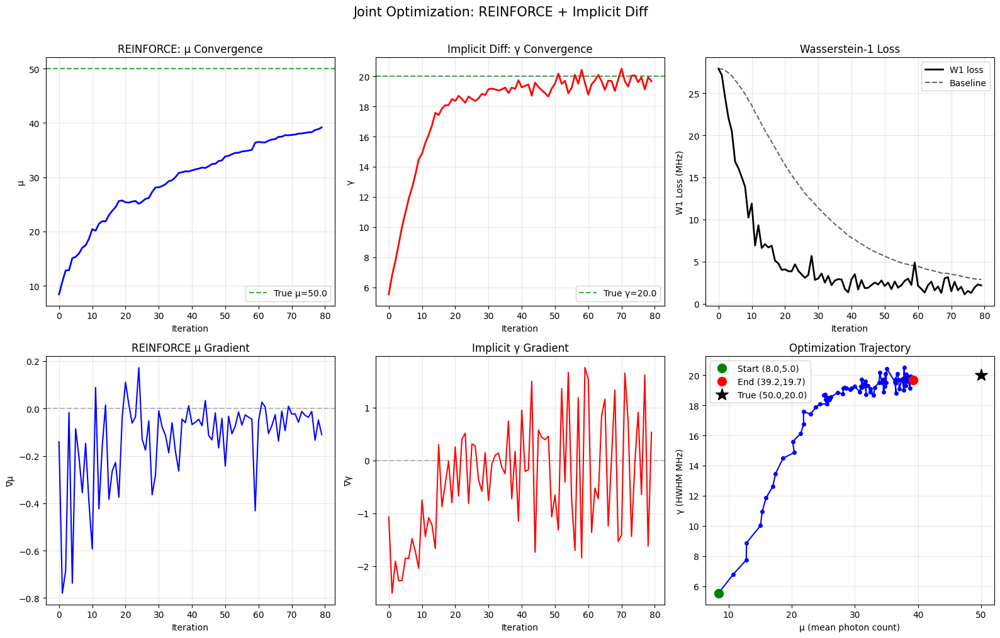
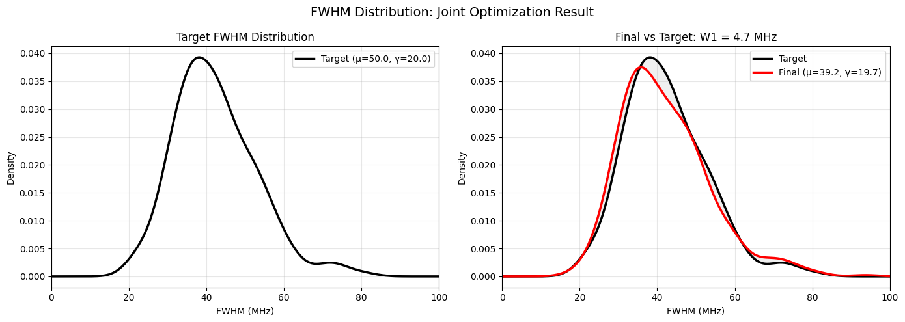
Degeneracy Problem
- Optimizing both together is degenerate: different (μ, γ) pairs can produce the same FWHM distribution
- This makes it impossible to identify the true parameters from FWHM alone
μ and γ Influence on FWHM Distributions
- Visual inspection to understand the degeneracy
- Higher μ → more photons → narrower FWHM (thinner distribution)
- Larger γ → wider line → thicker distribution (plus a shift)
- The two effects can cancel: many (μ, γ) combinations give identical FWHM

Joint Optimization with FWHM σ (Uncertainty)
Key insight: the data contain uncertainties.
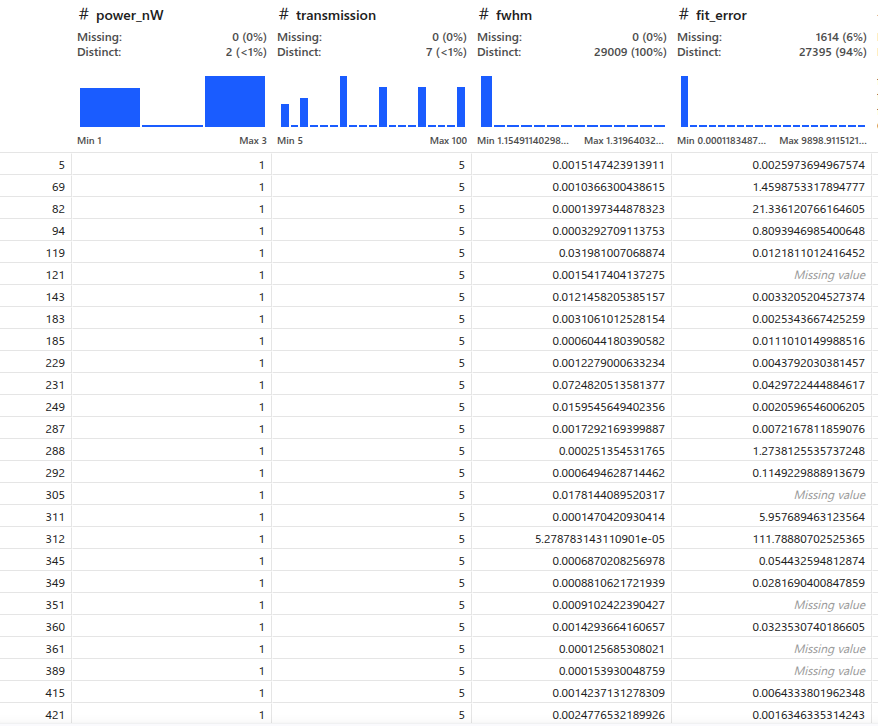
- Different (μ, γ) pairs can match the same FWHM but differ in their FWHM uncertainty (σ)
- Example:
- μ=20, γ=10 → few photons, large σ (uncertain FWHM)
- μ=200, γ=5 → many photons, small σ (precise FWHM)
- Both hit the same FWHM target, but σ tells them apart
Solution: add a second term that matches the whole σ distribution
Gradients:
- μ: REINFORCE with combined reward (FWHM + σ matching)
- γ: implicit differentiation for FWHM + CRLB approximation for σ (dσ/dγ ≈ 2/√n)
Sigma Optimisation – How It Works
-
σ comes from the Hessian of the log-likelihood at the fit optimum
-
Loss: quantile-aligned absolute error on both FWHM and σ
-
μ gradient: per-run advantage = −|FWHMᵢ − target| − λ·|σᵢ − target_σ|
∇μ = mean((advantage − baseline) · score)
-
γ gradient: sign(FWHM−target)·(dFWHM/dγ) + λ·sign(σ−target)·(2/√n)
-
μ controls σ mainly through photon count; γ controls FWHM through linewidth
→ the two terms anchor different aspects, breaking the degeneracy
Joint Optimization Results with FWHM σ
First Result: Basic Joint Optimization
Works well but overshoots because close to the true value the distributions match closely and the μ gradient becomes mostly noise. With a large μ it jumps around.
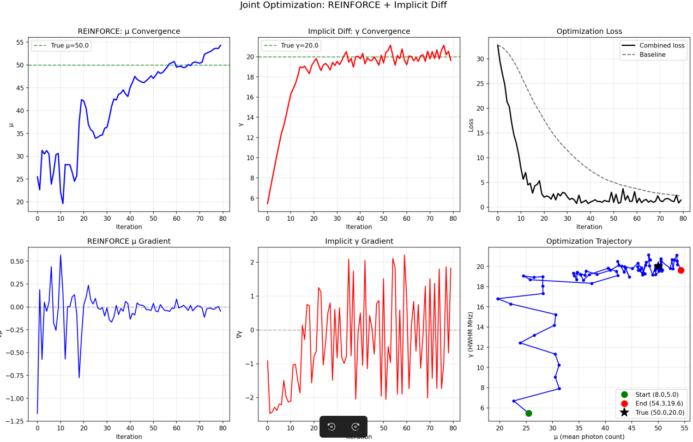
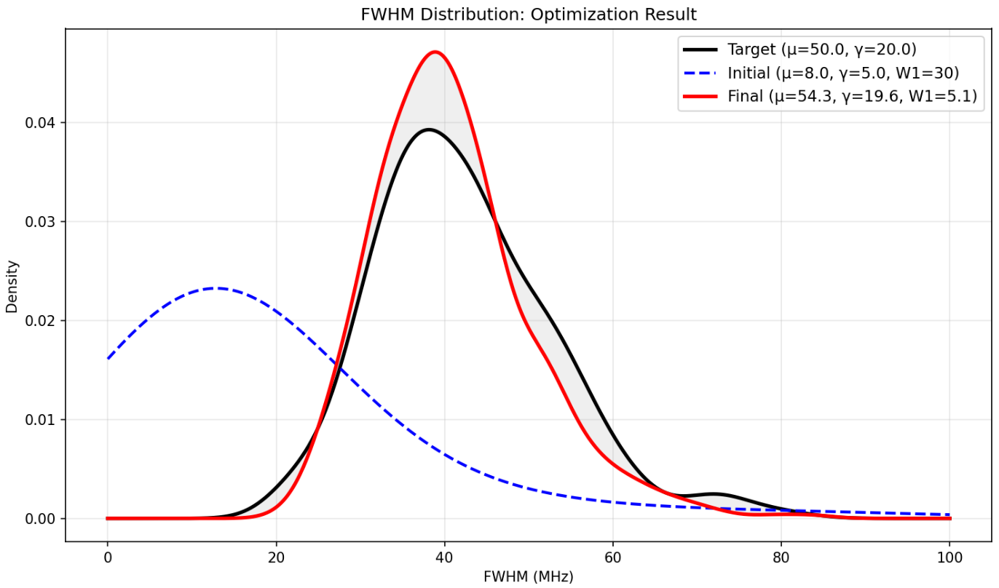
Second Result: With Learning Rate Decay
We included gradient decay to restrict the noise.
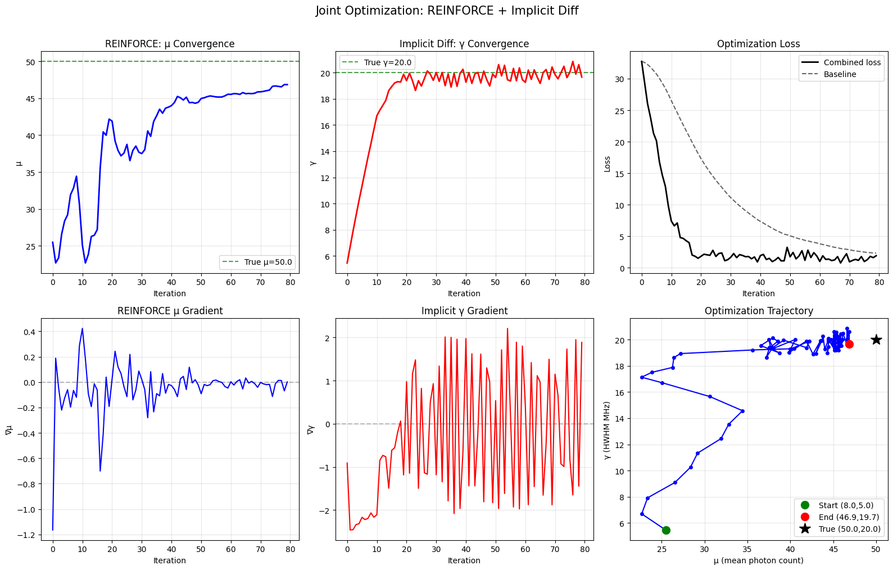
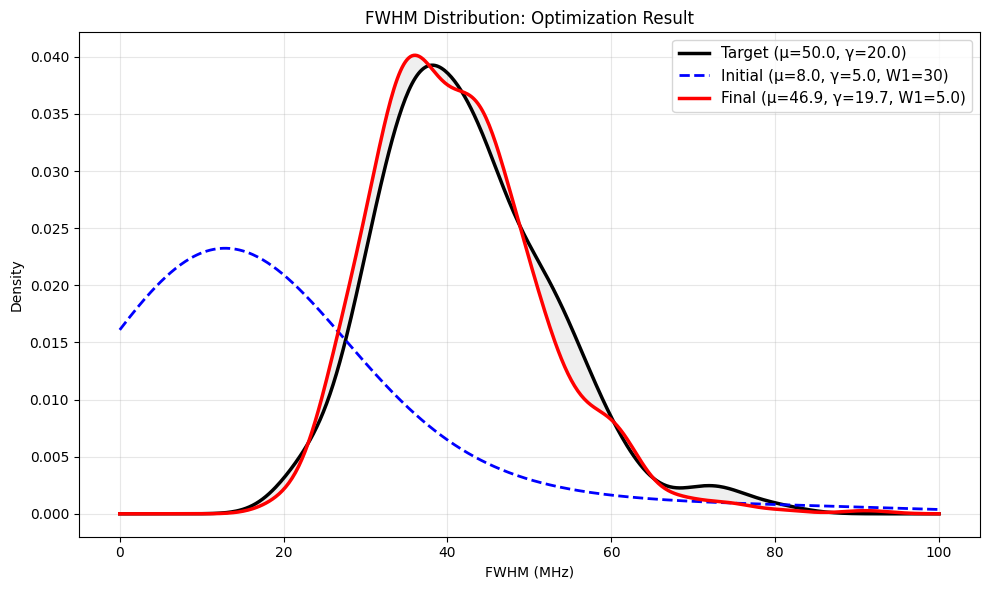
Falls slightly short but still very good. (We could keep experimenting with decay strategies.)
Third Result: With FWHM Mean Loss
Included a new FWHM mean loss to provide μ with a clear signal once it reaches the noisy region of the distribution.
New: Added a mean-matching term to help REINFORCE push μ to the correct value when per-quantile signals become noisy.
| Gradient | Source | Why |
|---|---|---|
| μ (REINFORCE + mean matching) | Per-quantile reward + λ_mean· | FWHM_mean − target_mean |
| γ (implicit diff + CRLB) | dLoss/dγ = W₁'(FWHM)·dFWHM/dγ + λ·W₁'(σ)·dσ/dγ | Matching both tightens γ constraints |
Why the mean loss helped
The REINFORCE gradient for μ is:
Near the optimum the FWHM distributions nearly match, so per-quantile differences become small and noise-dominated. The correlation ρ between photon count n_i and per-run loss Loss_i drops, and the gradient vanishes.
The mean term |FWHM_mean − target_mean| solves this by providing a global error signal that persists even when individual quantiles match:
- It has lower variance than per-quantile differences (averaged over N=200 runs)
- It directly correlates with μ: higher μ → more photons → narrower FWHM → lower mean
- It keeps the gradient alive when the W1 signal dies, by ensuring the advantage doesn't collapse to zero
- It acts as a regularizer: the per-run loss
Loss_igets a boost of+λ_mean·|FWHM_mean − target_mean|, which shifts ALL advantages uniformly, biasing the REINFORCE estimate toward the correct μ
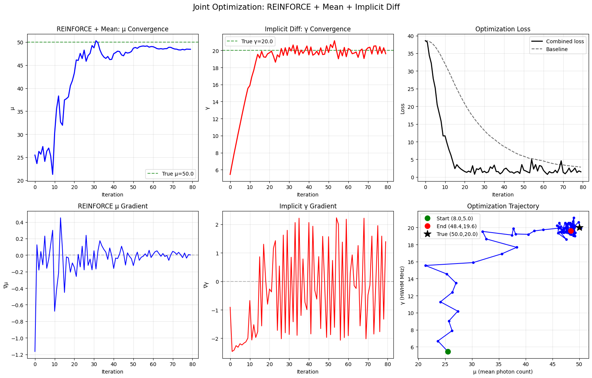
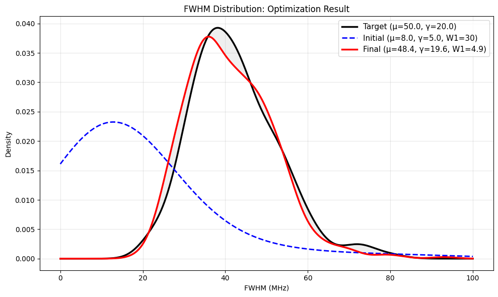
Already very good, and a cleaner convergence path than LR decay alone (12b).
Real Data Optimization
I tryied with the real data, and it worked!
power_nW == 3 & transmission == 40
3725 valid PLE scans at 3nW, 40% transmission. Mean FWHM 26.89 ± 10.18, range [0.88, 89.94].
3725 PLE scans made everyting extremely slow, for now at each step I randomly sampled 200 fwhm for initial experiments
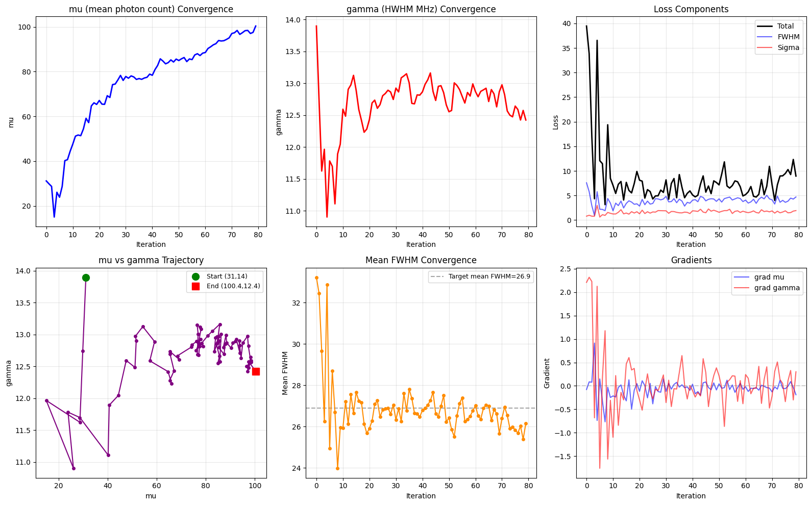
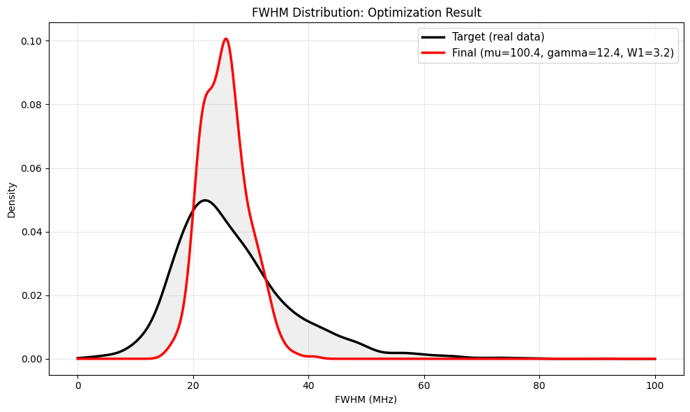
Next steps
- The L-BFGS is a bottle neck, find a better optimizer for the Voigt fitting
- Play with the hyperparamters (Learning Rates, Lambdas in Losses). Using Tensor Board
- Make the simulation as close to the PLE scans as possible to represent the procces as faithful as possible
- Calculate and Uncertainties.